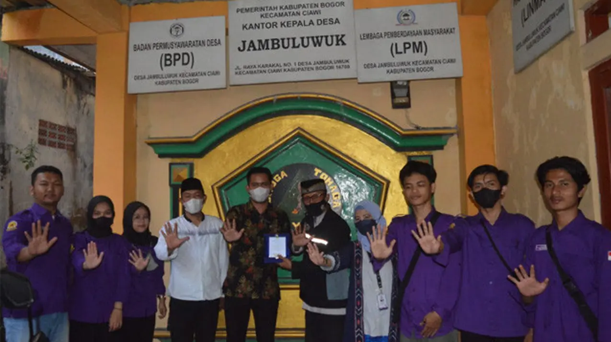

Mahasiswa Sains Komunikasi Unida Bogor Edukasi Warga Soal Literasi Digital
Pemahaman soal literasi digital di mayoritas masyarakat Indonesia masih cukup rendah. Hal ini tampak pada maraknya hoaks, penipuan online dan banyaknya konten khususnya video yang kurang berkualitas.
Untuk memberikan pencerahan kepada warga, mahasiswa dan dosen Sains Komunikasi Unida menggelar pengabdian masyarakat melalui penyuluhan dalam program Kuliah Kerja Nyata (KKN).
Bentuk penyuluhan ini adalah seminar yang bertema Peningkatan Edukasi dan Keterampilan Literasi Media Digital dalam Penyebaran Informasi melalui Konten Media Sosial. Kegiatan ini dilaksanakan pada Jumat (22/7) di aula kantor desa Jambuluwuk, Ciawi, Bogor.
Kegiatan ini mendapat antusiasme peserta yang dihadiri oleh kader posyandu Desa. berlangsung pukul 14.00-17.00 WIB. Salah satu pembicara dalam kegiatan itu adalah Maria Fitriah, Dosen Pembimbing Universitas Djuanda Bogor.
Saat ini teknologi memberikan kemudahan dalam mengakses informasi secara cepat bagi masyarakat. Namun informasi yang disampaikan harus dapat mengedukasi, selain itu tiap orang harus mempunyai ketrampilan dalam menyampaikan pesan, sesuai karakter mediumnya,” tutur Maria Fitriah sebagai pembicara sekaligus dosen pembimbing.